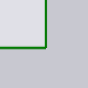
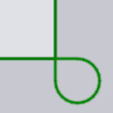

Usinage d'angle
Le panneau Corner Treatment sert à effectuer divers types d’usinages spéciaux au niveau des angles vifs d’une découpe laser. Ce panneau est accessible en cliquant près d’un coin d’une découpe laser.
-
Auto compute : lorsque le réglage de calcul automatique est activé (par défaut), TecZone Laser calcule un usinage d’angle approprié en fonction de la machine, du TTL en cours d’utilisation et l’angle au niveau du coin. Si vous souhaitez modifier l’usinage d’angle, vous devez désactiver cette option.
-
Traitement de surface : le type d’usinage d’angle (voir le tableau ci-dessous pour plus de détails). Certaines des méthodes d’usinage ont un réglage (comme rayon ou temps qui est utilisé pour commander l’usinage des angles).
-
Rayon ou Time (sec) : certains usinages (comme Rounding et Looping) ont besoin d’un rayon comme entrée. Certains comme Dwell et Cool ont besoin d’une temporisation.
-
Les sélecteurs situés au bas de ce panneau peuvent être utilisés pour étendre l’ensemble des coins sélectionnés afin qu’ils puissent tous être modifiés ensemble :
-
Similar on this contour : si vous cliquez dessus, tous les angles de ce contour ayant un angle similaire à celui sélectionné sont mis en évidence à l’aide de petites croix bleues. Ensuite, toutes les modifications que vous effectuez seront appliquées à tous ces coins.[1]
-
All on this contour : comme le sélecteur ci-dessus, mais sélectionne tous les coins de ce contour, quel que soit l’angle.
-
Similar on all contours : sélectionne tous les coins similaires (même angle) sur tous les contours préparés de la pièce afin qu’ils puissent tous être modifiés en parallèle.
-
Méthodes d’usinage
Le tableau ci-dessous présente les différentes méthodes d’usinage d’angle. Les méthodes Rounding et Looping modifient visiblement la géométrie de la coupe, tandis que les autres méthodes ajoutent une petite icône dans le coin pour indiquer le type d’usinage qui est effectué à cet endroit.
| Usinage | Explication | Exemple |
|---|---|---|
Do nothing |
Aucun usinage d’angle effectué |
 |
Rounding |
Arrondit aux angles |
|
Looping |
Forme une boucle aux angles |
 |
Dwell |
Marque une pause aux angles |
|
Cool |
Refroidit le laser aux angles |
|
Stop |
S’arrête aux angles |
|
Slowdown |
Ralentit le laser aux angles |
|